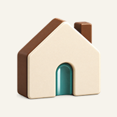

الاتصال بالإنترنت غير متاح
يمكنك العودة إلى أهلاً لعرض المحتوى المحفوظ على هذا الجهاز. بعض الصور والخدمات والروابط الخارجية تحتاج إلى اتصال بالإنترنت.
العودة إلى أهلاً
يمكنك العودة إلى أهلاً لعرض المحتوى المحفوظ على هذا الجهاز. بعض الصور والخدمات والروابط الخارجية تحتاج إلى اتصال بالإنترنت.
العودة إلى أهلاً